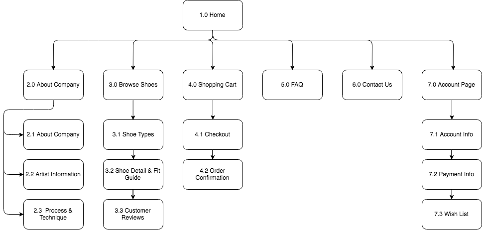
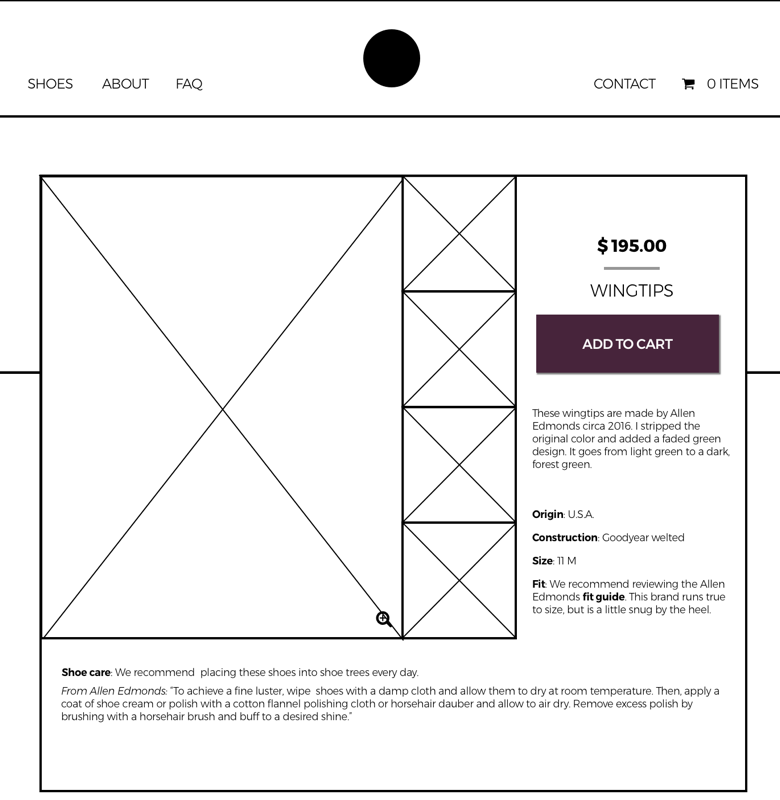
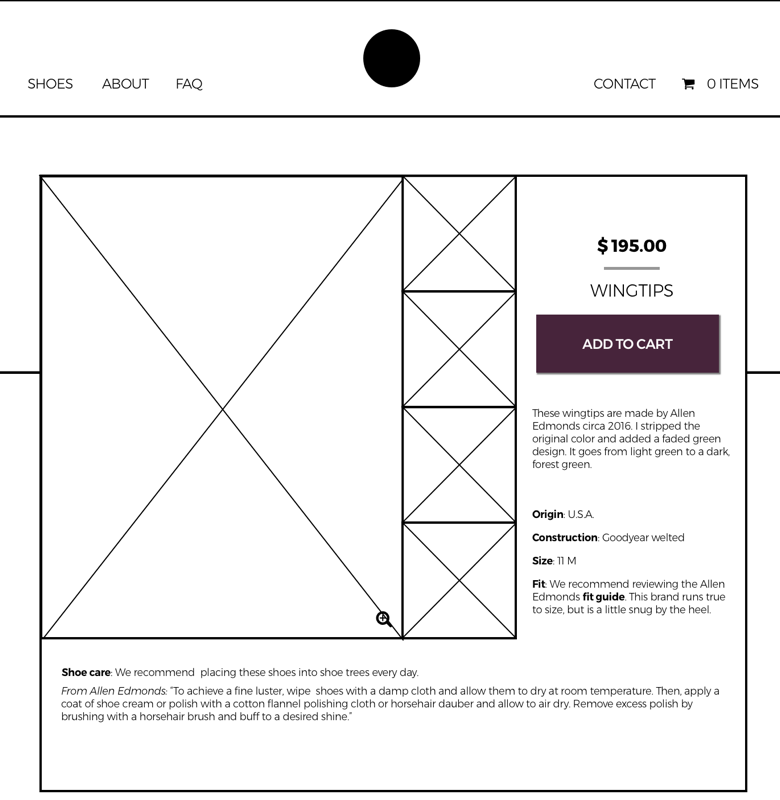

t was September 5, 2017. A very humid and warm day in D.C., right before the heat broke and Fall began - when it happened.
“This looks strange.”
“Yeah, it looks like tanned skin.”
“The background is leather to resemble the shoes.”
“The background is leather to resemble the shoes.”
The image we were looking at.
It was obvious, Darcy didn’t like the logo he was using. It didn’t reflect the image he wanted to portray of his brand, namely, “classic, fresh, and bold”. He wasn’t sure how to make it look and wasn’t sure how to market his product, and where to host it. It was currently on Etsy.
my role
That’s where I came in. Freshly learning about the ways of website design and development, I was to help him create a brand identity and website.
the process
starting from here...

...and getting to here

There was a lot we had to do in order to get to where we wanted. To get started, I needed to answer these questions.
- What did Darcy want, other than a “fresh, cool, and bold” brand? What did he mean by “fresh”, by “cool,” and by “bold”?
- Where are we hosting this site? It’s an e-commerce site, so it’ll be easier to develop on top of a platform. There are so many options, which one do we go with?
- Who were our potential buyers? What were they like? He had an idea, but how correct is it?
Then we'd get to the design.
the approach
So, how to get those answers… surveys. Survey on top of survey to double-check the results of that other survey and then data cleaning. And then some research, which included pouring over some retail ecommerce studies by pwc and learning about the different ecommerce platforms.
ReFated Shoes company goals
Darcy’s mission for his company, ReFated Shoes is to repurpose and redesign old shoes. It’s not necessarily a social mission for recycling and renewing products in a wasteful industry, but rather the canvas he was working with. The old shoes or even unworn out-of-season shoes gave him the true freedom to “express himself” because they were unwanted and cheap to buy in bulk.
His goal also isn’t to make money selling his shoes. The shoes are his art. So inventory isn’t always guaranteed. His fear is demand being greater than supply.
target audience
Darcy's hypothesis:
“Men, fashion-forward, people who appreciate unique items.”
Survey results:
RIGHT on point.
However, interestingly enough, women buying shoes for the men in their lives were also very interested in his product.
breakdown
Age group:
Millennial & almost retired/retired
Income bracket:
Middle middle class - higher income
So, we created user personas to help guide the design as well as generate marketing ideas.
who's vincent?
Vincent is a 23-36 year-old banker/consultant or entrepreneur. His goal is to find a unique & luxury shoe that will stand out.
ideal day?
"video games during the day, fancy food, then a night out getting smashed with friends."

who's jean?
Jean is a 50-75 years-old. His goal is to reflect his flamboyant personality onto his clothes.
ideal day?
"Going for a short trip somewhere, some walking, taking photographs, and finishing with a nice dinner & wine in a familiar restaurant."
the marketing
competitive landscape
Mr. Patina (the big one), J. Fitzpatrick Shoes, Septieme Largeur, Barker Shoes, Crocket & Jones, Dandy Shoe Care
Price point: $300-$1,000
Design aesthetic: craftsmanship, old school feel
How they market: mainly social media


product differentiation
“It’s cheaper than Mr. Patina and ready-to-ship. And unique offerings; each of the shoes are one-of-a-kind.”
Price point: $75-$250, at least until his skills and reputation improved to another level
Marketing: word of mouth, Google ads, and maybe social media
Message to customers: “Great craftsmanship. Story of the phoenix rebirthed from the fire of the bargain bin who finds himself on the top shelf once again.”
*This message changed with survey results. People didn’t want to hear that they were wearing old “refurbished shoes”. We tested a few other terms to use, and decided on “hand-painted shoes”, and we’d describe the process in another section, outside the tagline or title.
raw survey results
survey 1
We asked 33 people about their shoe-buying preferences including whether they’d purchase refurbished shoes and their budget.
This first survey helped us define our target customer: out of the 87.5% of respondents who would pay between $100-$300 for a pair of shoes AND would purchase shoes online, 50% of them would consider buying refurbished shoes.
87.9%
consider quality & style to purchase shoes
75.8%
would or does purchase shoes online
48%
would buy refurbished shoes
survey 2 & 3
We surveyed 133 people to understand whether the term “refurbished” or the concept behind RFS turned customers away. It was the word. The third survey and preference tests examined different word usage. The final term we chose was hand-painted.
54.3%
would consider buying hand-dyed shoes
25.4%
would buy hand-dyed shoes
'used'
most resembled “refurbished”
Challenges
- The word "refurbished"
- Ambiguity behind the refurbishing process
Solutions
- Replace "refurbished" with "hand-painted"
- Show before / after pictures
- Explain the process
translating to web
So, what information do we need to include in this site?
The shoes
Background on Darcy
Information on the product
Typical ecommerce pages: shopping cart, account information, checkout, payment
Customer reviews
Return policy, shipping & delivery information
A card sort prompted the addition of:
Fit guide for each shoe
Wish list
Process of hand-painting shoes
The final site map:

turning a site map into a website
Now the fun part. We wanted to make sure that the site has a pretty standard flow, with no confusing elements. So we kept to the basics. This made the payment/checkout site, account settings, about, shoe browsing, and contact pages very simple to design - especially after we determined the layout/overall look with the homepage.
homepage
I sketched out 4 different versions of the homepage, all focusing on the product. With Darcy, we narrowed the options into two, then tested the lo-fi versions. There was a clear preference for the final decision.


two lo-fi versions
version 1

version 2
frequently asked questions
The FAQ page went through two different iterations from sketching to lo-fi:


product details
"Could you add the shoe size to the description?" "What about including a before picture?"
During testing, users spent the most time on this page, reading through the details. They generally liked the layout, but brought up obvious concerns that I’ve added - as you can see in version 2. I also received a great comment that I left up to the entrepreneur: “What about including a before picture?" He, unfortunately, doesn’t have before photos for all of his shoes, but plans to take before photos from now on.
 

branding
Logo Formation
Logo Details
Colors


Typography

Buttons

Mockup

prototype
First, I'd like to share the final prototype. Then, I'll show you how we got there.
User Feedback
I conducted multiple rounds of user feedback
Positives
Nice, good looking products
Color and layout
Checkout process is standard
Functionality works well
"All the stuff you expect to see" on a retail site
Respondents understood what the site was selling
Suggestions
Highlight the process of the shoes more to show that it’s not your average retail site
"Why is there a quantity button if each shoe is unique?"
Add a way to remove something from the cart
Font size seems too large
Landing Page
About, Contact, FAQ


Purchasing Flow


{kind=link}
Membership
Darcy’s goal is to include membership services once he builds a larger following. So, we planned for the future and designed an account page.

what i learned
In retail, photography is just as important as the site design. To dispel concerns of condition and quality, the users requested more photos of the finished product as well as the painting process.
We discovered that customers want to learn about products prior to purchasing them. In the future, we will explore embedding videos on the website and social media platforms.